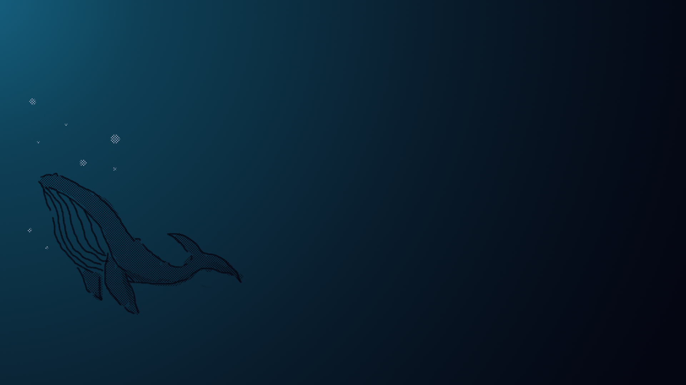

目的/コンセプト：従来の水族館とは一風変わった楽しみ方ができるようなイベントのポスターを作りたいと考え、体や動きの大きいペンギンやアザラシではなく、昼間は注目されづらい小さな熱帯魚などに焦点を当ててみました。暗闇でライトアップされることにより昼間のイメージとは打って変わって、色鮮やかで光沢感溢れる熱帯魚の美しさが引き立つよう製作しました。忙しない日々の中でアクセサリーショーケースの前にふと立ち止まるようなひとときを感じ、特別な日やいつもよりロマンチックなデートを演出したい方へ。
デザインについて：まず被写体である魚の中で特に目立たせたいところを決め、そこをよけてイベント名を配置しました。キャッチコピー自体にも水の要素を入れたかったので、泡に見えるよう丸で囲み、「およぐ」の部分には動きを出すために波紋をつけ「宝石」の文字には輝くイメージの四芒星形（キラキラマーク）をつけました。写真を上部に寄せ周りに余白を持たせることで、全体が暗い印象にならず、キャッチコピーを見やすくデザインできました。余白のスペースにも水彩絵の具のしぶきを散らし、より洗練されたデザインに仕上げました。
目的/コンセプト：幅広い年代の方が気兼ねなく訪れることのできる動物園をイメージし、明るくワクワクできるようなポスターを作りたいと考えました。また、「意外と大きいんだな」「テレビで見た時より鳴き声が小さいんだな」と、実際に訪れて感じることも大切だと思っています。多くの人に興味を持ってもらえるようにかわいらしくポップな雰囲気で製作しました。
デザインについて：写真の中心に地球をイメージしたロゴマークを配置し、余白にいろいろな形や大きさなど動物の足跡をつけることで、動物たちや地球、自然とのつながりを表現しました。動物の写真にはクレヨンで落書き風のリアクションを書き、明るく楽しい印象を持ってもらえるようなデザインにしました。フォントからも楽しい印象をもってもらいたかったので、字体や位置なども写真と被らないようにしながら工夫しました。
目的/コンセプト：「不思議の国のアリス」をテーマに、男女両方に興味を持ってもらえるようなバナーを目指しました。従来の水色を基調としたアリスより赤や黒などハートの女王を連想させる配色にすることで、脱出ゲーム特有のワクワク感を表現しました。普段は学業と部活動で忙しい学生たちに、普段は味わえないような非日常感を感じながら時間を忘れて楽しむことを忘れず、「子供でいる時間」を楽しんでほしい、という思いで製作しました。
デザインについて：世界観が伝わるようにタイルの地面を魚眼レンズのように歪ませ、トランプや紅茶の入ったティーカップを浮かせてかわいらしさの中の「違和感」を表現してみました。全体的に暗い色味なので奥行きが出るよう文字に背景をつけました。敵役のハートの女王に焦点を当て「挑戦状」などのワードで男の子の興味や、ウサギのシルエットやティーカップで女の子の関心を引けるようにデザインしました。背景や文字などに粗目のフィルターをかけティーカップとの質感の違いを出し、ストーリー性が伝わる題名やセリフの文字が目立つようにしました。
目的/コンセプト：見てくれた人に稚内市の魅力が伝わり、訪れたくなるような観光バナーを作りたいと考えました。私の友人が稚内市で生活していて、たまに綺麗な景色の写真を見せてくれたり、稚内市ならではのエピソードをよく話してくれます。私も一度だけ訪れたことがあり、自然が豊かで素敵なところだな、と感じました。使用した写真は利尻島で撮られたもので、旅行雑誌などに載せても違和感がなく、シニア層が見やすいようなシンプルなバナーを目指しました。
デザインについて：写真を全面に置き文字を左右に寄せることで、一番最初に写真に注目してもらえるようなデザインにしました。文字を縦にした理由はバナー自体が横向きだったのでデザインが単調にならないようにしたかったことと、シニア向けの渋さのあるシンプルな作りにしたかったからです。特に見てほしい部分に半透明の装飾を施し、少し文字からずらすことで遊び心も表現しました。
コンセプト：ポートフォリオ全体で私自身について表現したかったので、クジラをメインとした穏やかな海中の風景を再現してみました。2匹の「クジラ」は好きな動物の一つでもあり「慈しむ心・他者とのつながり」などの私が大切にしていることを、「海」は「性格や人生観」を表しています。
これから作りたいデザイン：誰かの心に届くようなデザインや、クライアントのニーズを叶えたデザインを作りたいと考えています。デザイナーだからこそ作れるものや、実現できることを自分やチームで制作していき、より良い社会的影響を与えることが目標です。今回ポートフォリオサイトや作品を作ってみて改めてデザインの難しさや楽しさを再認識することができました。年代、性別、流行、季節、などデザインを考える時の軸となる要素を組み合わせながら完成形をイメージすることの難しさや、その完成系を手探りで作り上げていく楽しさはデザインの仕事ならではの喜びだと思っています。
デザインについて：
サイト全体で海を表現するため最大サイズで1枚ずつ制作し、繋げた箇所がずれないようシンプルなデザインに仕上げました。色合いが単調にならず、かつ文字が見づらくならないよう工夫しながらグラデーションを調整しました。サイトの上部や中間部はクジラの声が響く様子をイメージして大小さまざまな円を重ね、下部を静かな海底に見えるようにしたかったので、装飾を減らし色も濃くすることで表現しました。
一目で習熟度がわかるようにグラフの隣と本文ページに％を表記しました。背景の色を縦のグラデーションにすることで奥行きのある海中を表現し、先端が波のようなデザインのグラフと本文ページには半透明の水面をイメージした装飾を施しました。
目次のデザインをコース料理のメニュー表を参考にして製作しました。背景が濃い青なので白文字で大きく表記することで見づらさを軽減しています。メニュー表を参考にした理由は、私の両親が飲食関係の仕事をしていることや私自身が料理を作ることが好きだからです。
クジラの写真を参考にしながら、Photoshopを使用してマウスで描きました。繊細で温かみのある印象になるように塗りやペンツールを工夫しました。特に、背景の海を活かせるようにデザインを考えることが難しかったです。